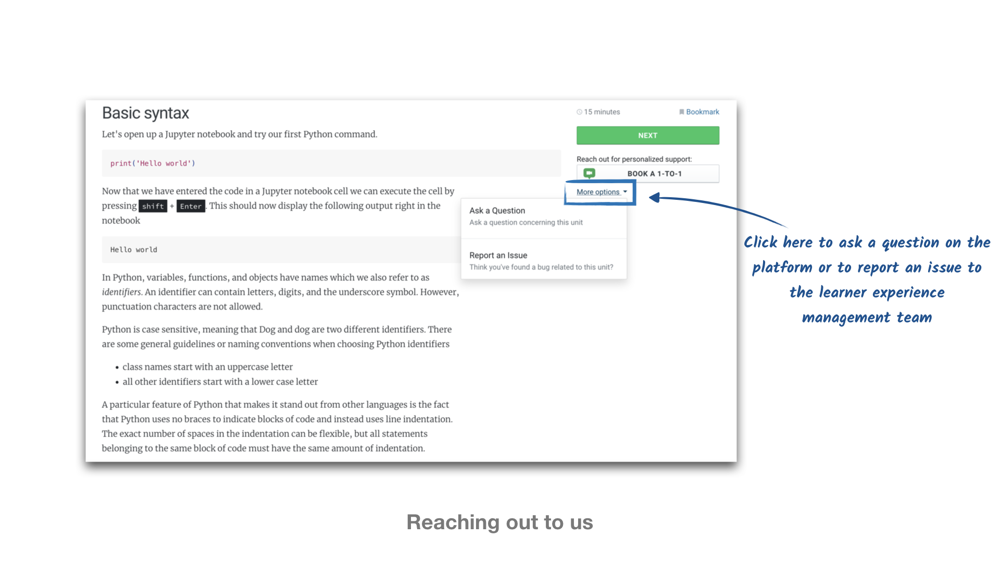
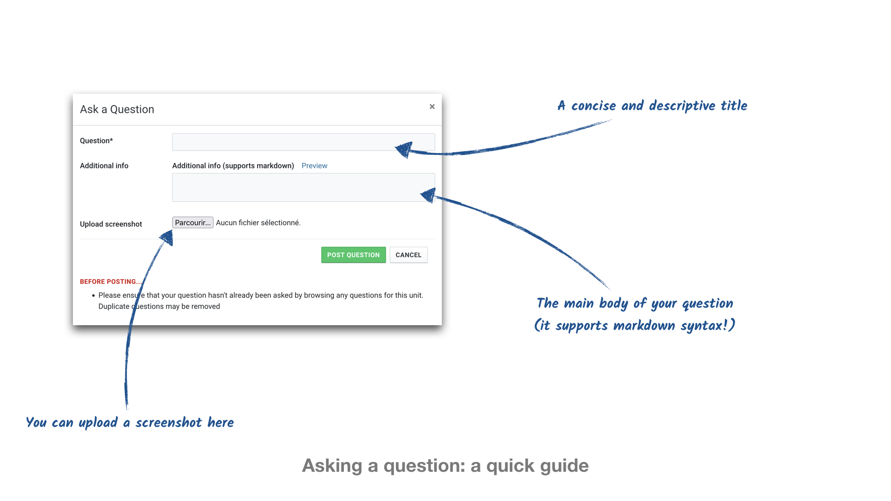
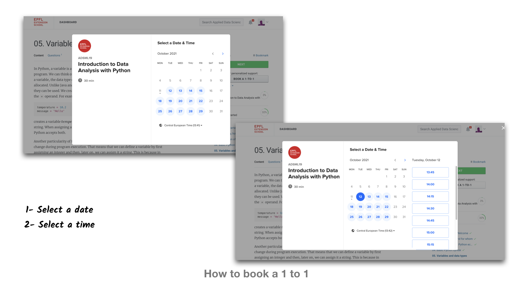
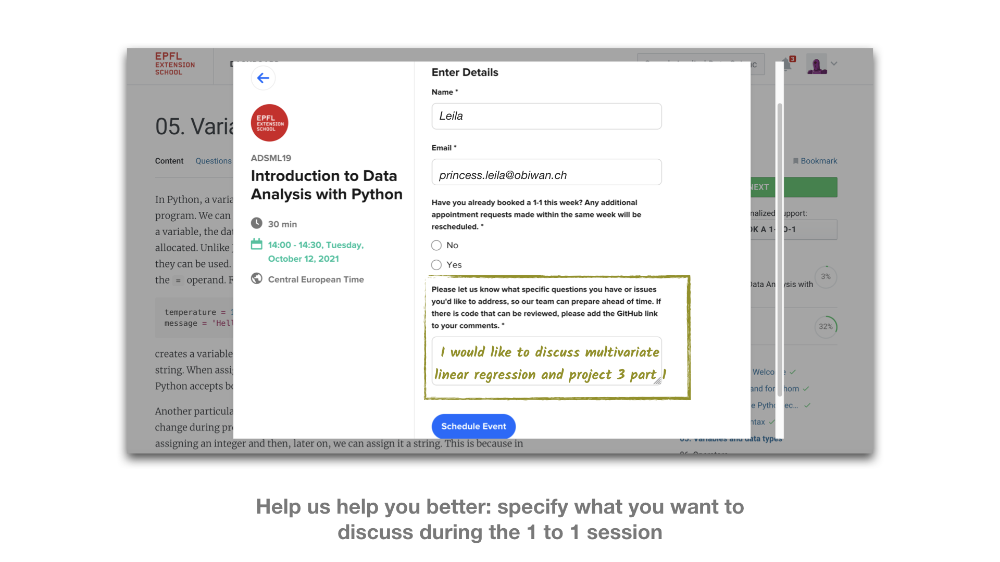
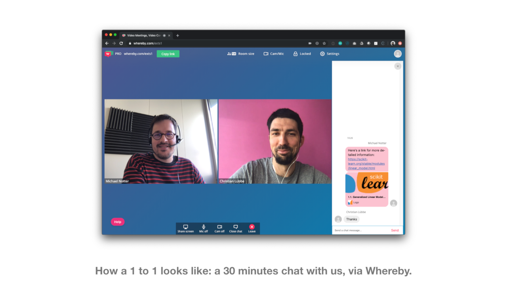
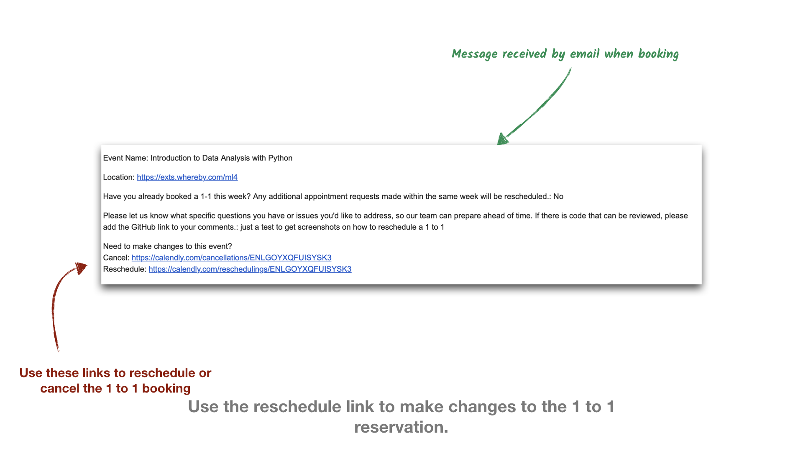

A central pillar of our program is to support you on your learning journey and help you when you get stuck or have questions. There are several ways in which you can get help via the platform. You can check out the existing questions or ask your own question at the bottom of each unit. You can also book a 1 to 1 with us where we can discuss your question or problem more directly.
Asking questions via the platform
At the end of each unit is a section with learners’ questions on the material in the unit and our responses. When you are unclear about a concept or a piece of code, we would suggest first having a look there. Chances are that other learners have already asked similar questions, and received an answer or solution to their problem.
If you can not find a suitable answer then you can ask your own question. For this you need to use the “Ask a question”-button, found under “More options” in the top right corner.

How to ask a question
In order for us to be able to help you in the best possible way when responding to your questions, we ask you to follow the following steps for asking a question, whether it is a question that is code related or more conceptual.
- First, take a look at the bottom of the unit for previously asked questions and see whether another learner has asked the same question. If you cannot find the answer here, then do not hesitate to ask it!

Be specific about your request and choose a title that is descriptive. Other learners should be able to find your question easily, too. For instance, avoid writing “
pandasgives an error”. That could mean anything. Instead use “Error when importing a csv usingpd.read_csv()”.Then use the main body of the question to introduce the problem/request (e.g. I am trying to import a csv file that is stored on my computer…) and then describe your problem/request in more detail. Often, if your question is about code, you will have to enter some code in the main body of the text. When adding code to the comments, in order to well render it you can use three backticks at the beginning and the end.
Example:
```python
print("My code is nicely rendered")
```
will render as
print("My code is nicely rendered")To know more about Markdown syntax, please do not hesitate to read this article
How to book a 1 to 1
Click on the “Book a 1-to-1”-button in the top right corner. Then choose a date and a time for a 30-minute chat with one of our team. You have the right to one 30 minute “1 to 1” per week, and they are non-cumulative. You can use this time to ask for any clarification you might need on the material, ask for extra examples, or receive feedback on exercises and projects.

Once you have chosen the date and time of your 1 to 1 session, please use the box at the bottom of the window to add a useful description of what you want to discuss during the session. This will help us be best prepared and make the 30 minutes as efficient as possible.

When you book a 1 to 1 session with us, you will receive an email with the details of the booking. In the message, you can find the location of the 1 to 1, which is a link to the Whereby platform. You do not need to install anything to access it as it is hosted in your browser. Just click on the link at the time of your scheduled 1-1. If you have any issue with accessing the Whereby link, let us know and we can arrange to have a video call using another service, like Zoom.

The booking platform assigns you randomly to an available course instructor. This is done on purpose, as we believe that you will benefit from learning from different instructors with different approaches to the problems.
However, when a course instructor has graded your project, they will typically provide you with a one-time link to their calendar and ask you to book a 1-to-1 directly with them to discuss their feedback on your project.
How to reschedule a 1-1
Sometimes your calendar changes and you can no longer attend the 1 to 1 session at the time you booked. Or you found your answer and no longer need the slot. That is not a problem.
But in that case, it is important to change or cancel the booking in advance. This will allow other learners to get access to your spot if it suits them.
The process is very simple. In the email confirmation that we sent you for the original booking, you have two links at the bottom: one to cancel and one to reschedule your booking. It is nice and easy.

Help with your project work
At the end of each course, you will reach a project, that you will have to work on, submit, and get approved. Once you reach this stage, you will arrive at a project page, where you will be able to communicate privately with the instructors through comments. You will see that comments work exactly like questions (you can use simple Markdown syntax, for instance) but the difference is that this will be a private dialogue directly with us, and no other learner will be able to see your comments.
External help
Many of the questions we get are about the code and options for additional functionalities. Instead of waiting for a reply to your questions or your 1 to 1 slot, you can also check out the documentation of the different packages. They provide detailed information about the individual parameters and options in the settings. Many also provide example code to demonstrate the functionality of a method - an example. And we will show you soon how to access such information directly from within your work environment.
Alternatively, there are web forums like Stack Overflow or blogposts. These can often provide a good start point. But keep in mind that the most common packages are updated quite frequently, so that the syntax may have changed since the post was written and functions may have been revised or deprecated.
We are now looking forward to having you as a learner!
If you have any questions and want any clarification on the course structure, do not hesitate to book your first 1-1, we will be happy to answer all your queries.